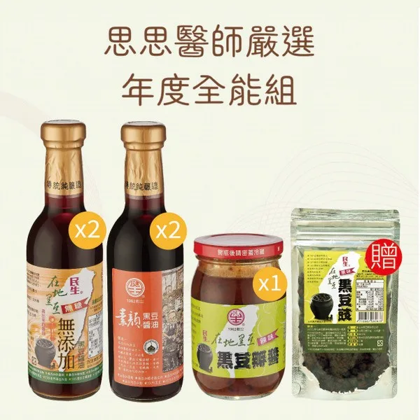
年度全能組
無添加與素顏醬油各兩瓶，加黑豆瓣醬，贈黑豆豉。
NT$1,460NT$1,670
思思推薦 / 強健推薦
Since 1962
高雄・甕缸日曬・壺底取法
醬油是廚房裡的隱形角色，每天在用，卻幾乎沒有人把它翻過來看成分。這是我們家用的醬油，我也親自去工廠看過它怎麼做出來。
前往思思醫師專屬優惠會連到民生食品工廠官網的思思醫師專區，由工廠出貨。
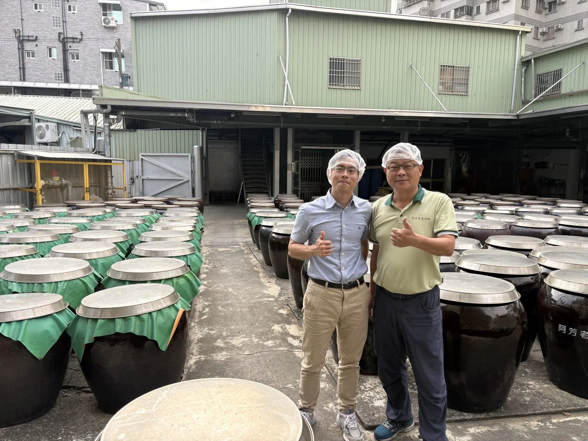
How It's Made
傳統做法要日曬熟成好幾個月；用鹽酸水解蛋白質的化學醬油，3 到 7 天就能做完。
用完整的台灣本土黑豆，特別是契作的台南五號，不用工業化醬油常見的脫脂黃豆片。全豆保留了黑豆的脂肪酸。
豆子蒸煮後進溫控室，讓微生物發酵。
把豆子表面老化多餘的麴絲洗掉，釀出來才不會有雜亂的霉味或苦味。
拌了天然海鹽的黑豆放進陶缸。陶缸白天慢慢吸熱、入夜緩慢散熱，缸內的日夜溫差不會劇烈變動。入缸六個月後先產出豆豉和豆瓣醬，七個月後才是醬油。
不壓榨、不催熟，讓原汁一滴一滴自然流出。產量很少，但每一滴都是原汁。
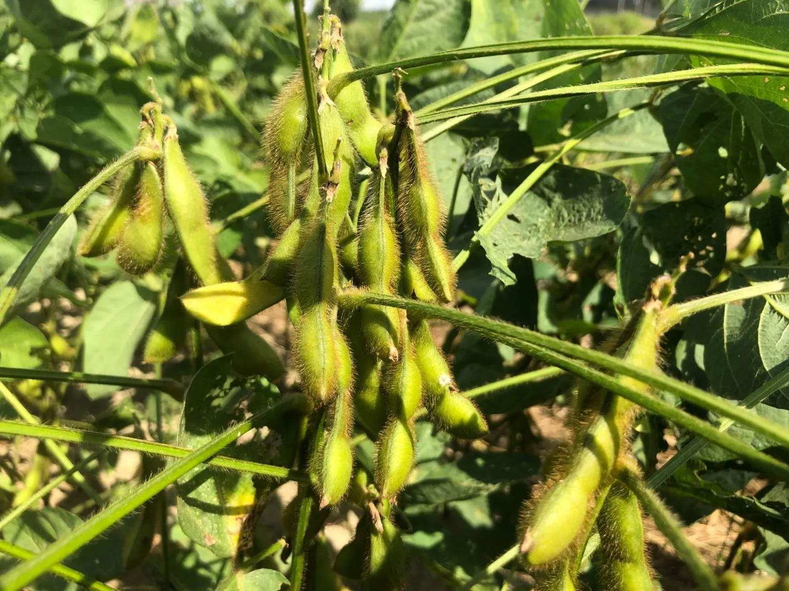
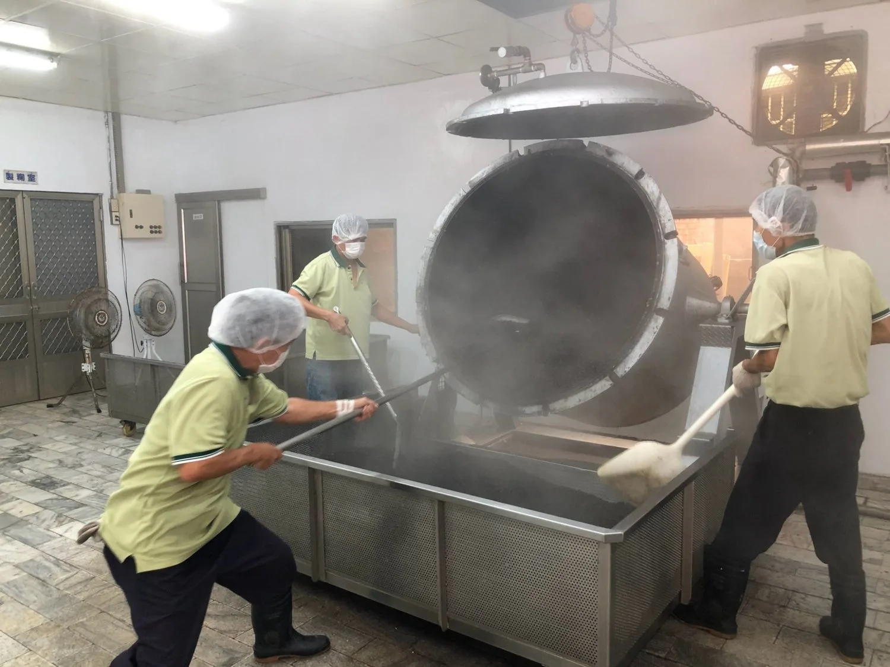
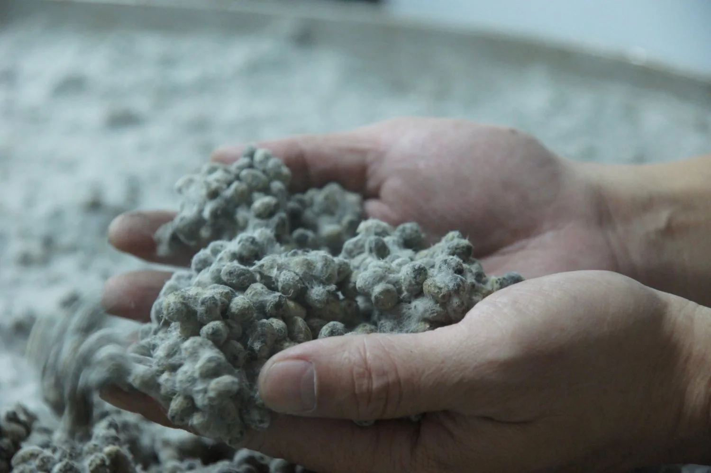
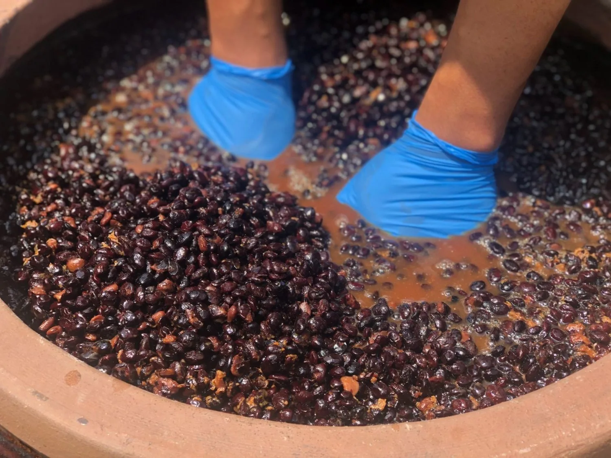
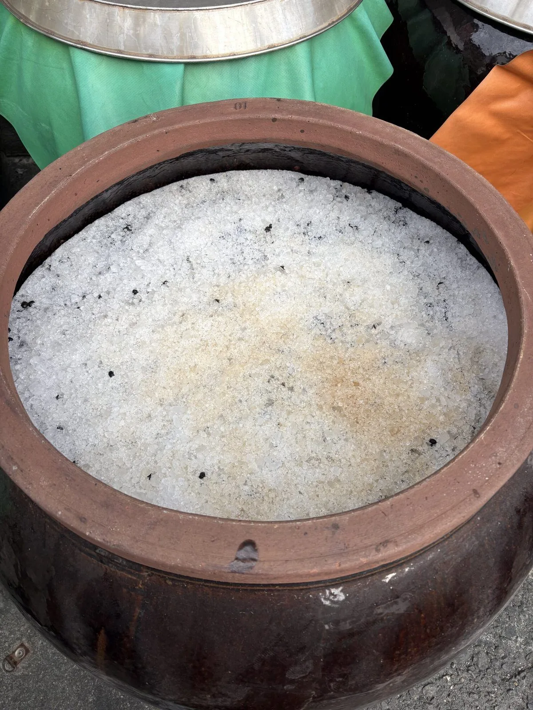
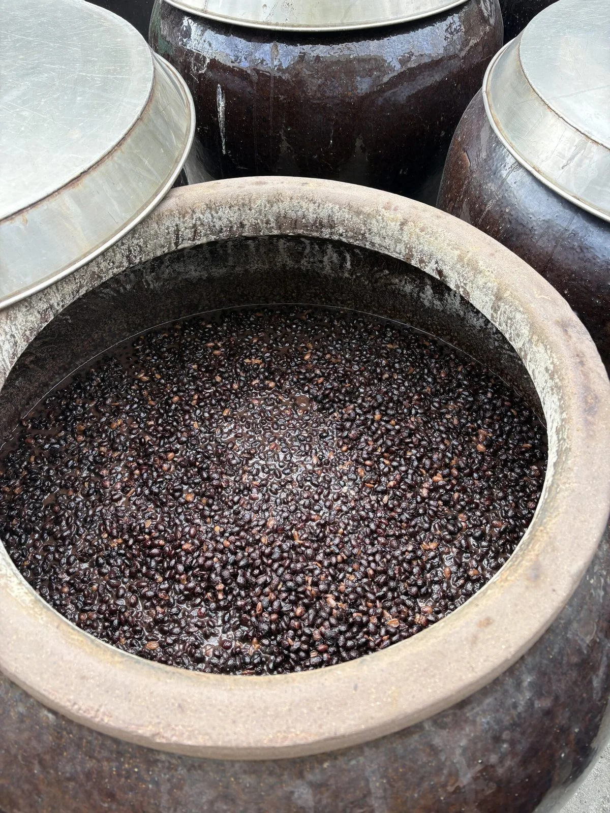
豆莢、蒸煮、製麴、翻拌四張照片攝影：張芳瑄
How to Use
鄭大哥提醒我一個顛覆料理習慣的觀念：要鹹加鹽，要甜加糖，要上色用糖色，醬油是拿來給食物鮮味和香氣的。
Four Sauces
四款都是甕缸日曬、傳統古法純釀、原汁自然滴出不壓榨。差別在黑豆來源和有沒有加糖。
| 在地黑豆 無添加 | 在地黑豆 原味 | 素顏 無添加 | 素顏 | |
|---|---|---|---|---|
| 黑豆 | 契作台南五號 | 契作台南五號 | 黑豆 | 黑豆 |
| 無糖 | 是 | — | 是 | — |
| 無麩質 | 不含小麥 | 不含小麥 | 不含小麥 | 不含小麥 |
| 黃豆 | 不用黃豆、脫脂黃豆片 | 不用黃豆、脫脂黃豆片 | 不用黃豆、脫脂黃豆片 | 不用黃豆、脫脂黃豆片 |
| 酒精 | 無添加 | 無添加 | 無添加 | 無添加 |
「無糖」依法規是指每 100 毫升含糖不超過 0.5 公克。兩款無添加醬油的營養標示，糖都是 0 公克。
不少人買過標示不含麩質的食品，卻還是因為生產線交叉污染而過敏。民生的生產線完全不含任何麩質原料，沒有交叉污染的機會。即使如此，他們還是陸續把產品送交檢驗，讓大家吃得更踏實。
Bundles

無添加與素顏醬油各兩瓶，加黑豆瓣醬，贈黑豆豉。
NT$1,460NT$1,670
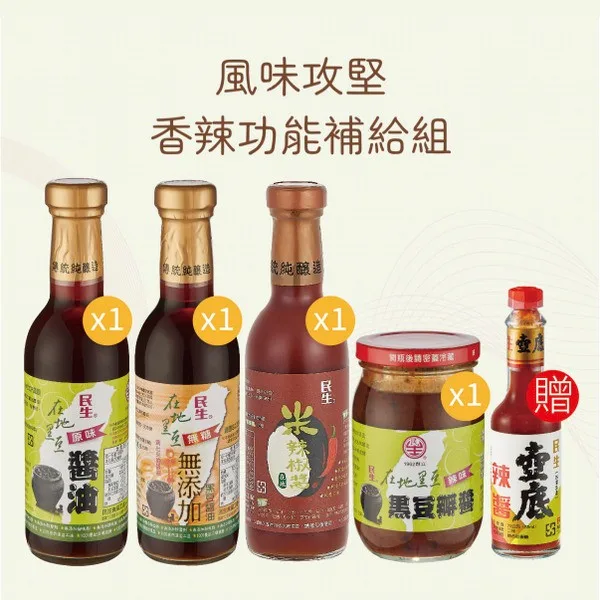
給愛吃辣的人，醬油之外多了辣味的醬料。
NT$1,260NT$1,405
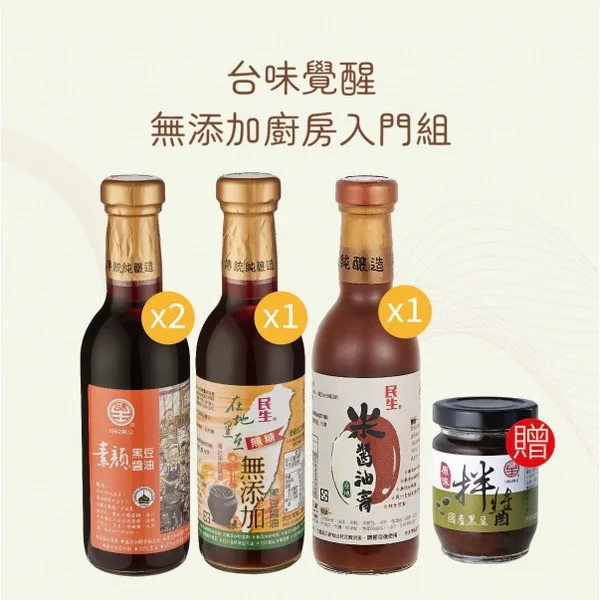
第一次買的人從這組開始，醬油和米醬油膏都有。
NT$1,320NT$1,490
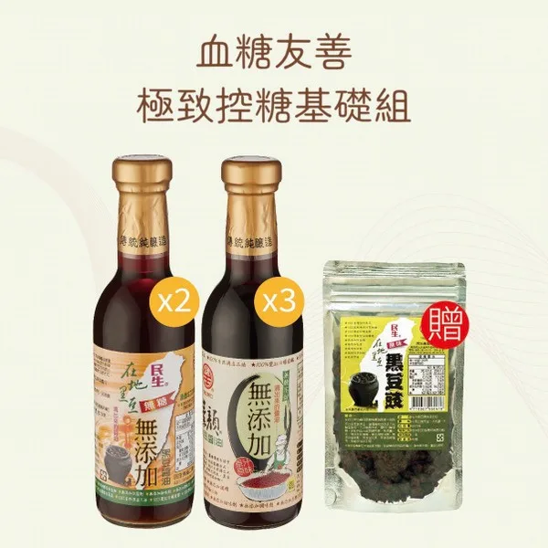
五瓶都是無糖的無添加醬油，贈黑豆豉。
NT$1,680NT$1,920
各組的內容與數量看圖，價格與組合以專區頁面為準。
Did You Know
10 毫升醬油加 100 毫升水煮沸，好醬油會起細緻綿密的泡泡，還有蛋白質凝聚出的浮沫。
沒有防腐劑的年代就有醬油了。高濃度、鹽分足的傳統醬油水活性低，不需要冷藏。
醬油加水稀釋就是薄鹽，水活性升高後容易變質，反而要加防腐劑或酒精。味道淡了，很多人會倒更多。
完整的參觀心得：傳統醬油工廠一日遊心得
FAQ
純釀醬油的濃度高，大約用市售一般醬油的三分之一就夠了。先少放，不夠再加。
在意糖的人選無添加款，營養標示的糖是 0 公克。原味款沒有標示無糖。
四款醬油都標示無麩質、不含小麥，也不用黃豆與脫脂黃豆片。民生的生產線完全不含麩質原料，沒有交叉污染的機會，產品也陸續送檢。
這是我和民生食品工廠合作的專區，透過專區購買，我會有收益。這是我們家本來就在用的醬油。